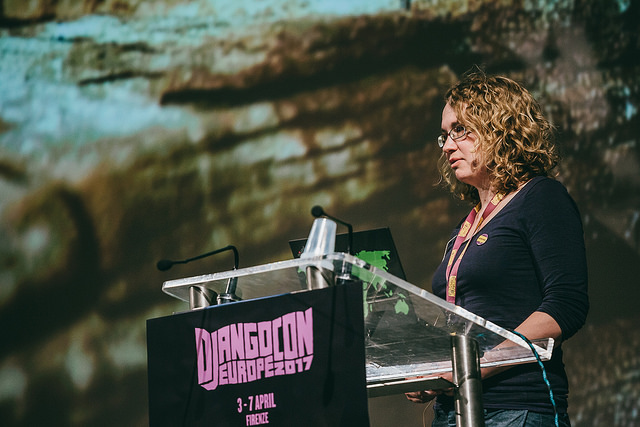

About me
I am an aspigirl (or autistic woman, if you want the more correct, less catchy description), and I write code (for a living as well as for fun). That much you might have understood from this sites title. Meaning that if you landed here you probably want to know more. So here is some more:
 Photo by Bartek Pawlik under CC BY-NC-ND 2.0
Writing and languages
I am a blogger without a mother tongue. I’m quite new to blogging still, but I’ve been writing practically my whole life and I love it. Correction, the actual act of writing is rather painful to me. People say that’s my own fault as I put too much pressure on the pen. However if I put less pressure it tends to just fall out of my hands with a devastating noise. So no, it is not the writing itself I like so much. It is producing words and sentences. I like putting them on paper, reading them over and over, analyzing and optimizing. The written word gives me all the time I need to think. To collect information and to react to it.
Not so the spoken word. Speaking has always been something I did because I had to. And even though I must admit that while growing up, I did discover quite a few exceptions to that rule (giving prepared talks, talking about subjects I like, with people I know, …) writing remains a safe haven I can always return to.
That said, why did it take me so long to actually write stuff other people can read? This has everything to do with my lost mother tongue. Over the last few years, I, the person who would rather write than speak, have become most fluent in a language that is not a written one: Swiss-German. The language I now use every day has become the one I can express myself best in. Closely followed by English, and less closely by my actual native language Dutch, and the big sister of Swiss-German: High German, and still a bit further off by my once second language French, and my absolute favorite language concerning grammar and structure: Turkish.
So as much as I would like to write both in German and English, I lost a lot of time on trying to improve my written German without satisfactory results so far, which is why I decided to let go of this goal for now, and to just write (mainly in English).
Things that matter to me
I am someone who likes to invest lots of time and energy in things I like and find important. Some might want to call them special interests, and I am ok with that. Although I may have to disappoint you if you expect this statement to be followed by a list of so called ‘typical autistic preoccupations’. (Those are a myth or a half truth at most anyway.)
I have been on a one year school exchange in Turkey when I was 18 and on a summer exchange to Senegal even before that. I also have extensive volunteering experience in both exchange organizations I went abroad with. Currently, I am a Django Girls organizer, which means I co-organize programming workshops for women in Bern, where I live. I also enjoy going to conferences workshops and summer schools (such as a natural fabric dying workshop, a chocolate workshop, djangocon europe, autscape, this summer school on renewable energy), as long as I can reach them without flying. (I fly as little as possible due to environmental concerns. Within Europe I usually travel by train, something I like doing a lot.) I am also active in my local autistic community, meaning that I have co-organized a self-help group, am regularly attending another one, and help to organize activities.
Besides the things above, what really fulfills me is making things. I make stuff from websites over food and photographs to clothes. I chose to become a software developer because that allows me to create things every day.
Other things I do
- Public speaking: I talk about autism, my projects, and other topics that interest me. Talks can be in English, (Swiss) German or Dutch. I’ve previously been part of the Öffentlichkeitsvortrag: „Die Welt durch meine Augen“ at the hospital of Interlaken in 2015 and I gave a talk about autism at Djangoconeurope in 2017 (which you can watch on youtube). I would love to speak more, and am looking for interesting events in Europe where I can do so.
- Writing: I mainly write for my own blog and projects, but for the right organization, at the right time and on the right topic, I can very well imagine to write for others too. Here is a small piece that I wrote for Thrisha Katkin, for example.
- Peer to peer coaching and mentoring: I have some experience with peer-to-peer coaching and one-on-one mentoring other autistic (young) adults, and this is something I really enjoy doing. Topics I can cover are: Learning to code, work, (university) studies, travel. Things I am good at are finding the right resources, and help with planning and organizing.
Where you can help
- My projects: I like doing web development projects that benefit the autistic community. Help is always welcome here! In particular if you are autistic and/or new to coding and want to grab one of the ideas as your first bigger project, I am glad to help you set it all up. But you don’t need to be a programmer to help me out. I am always looking for people who can test new things and give me feedback. Or maybe you live near me and want to help organizing events for the autistic community for example.
- Django Girls: If you are passionated about programming and want to help other people fall in love with code too, you are very welcome to help us as an organizer our coach at one of our Django Girls events in Bern, any other Django Girls event in the world, or organize your own!
- Translating and proofreading: Into translating (any language from English) or proofreading (mainly German)? Whether it is one of my projects or a blog post, I am always looking for people that can help me with languages.
You have a question? Want to work together? Something else you want to talk about I might find interesting? Write me an Email.